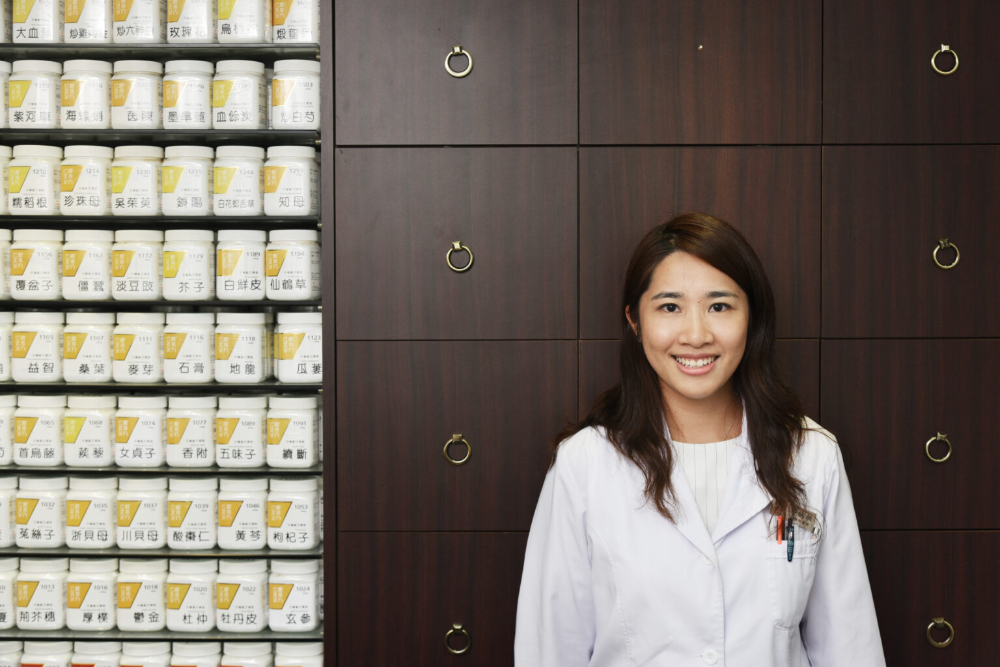
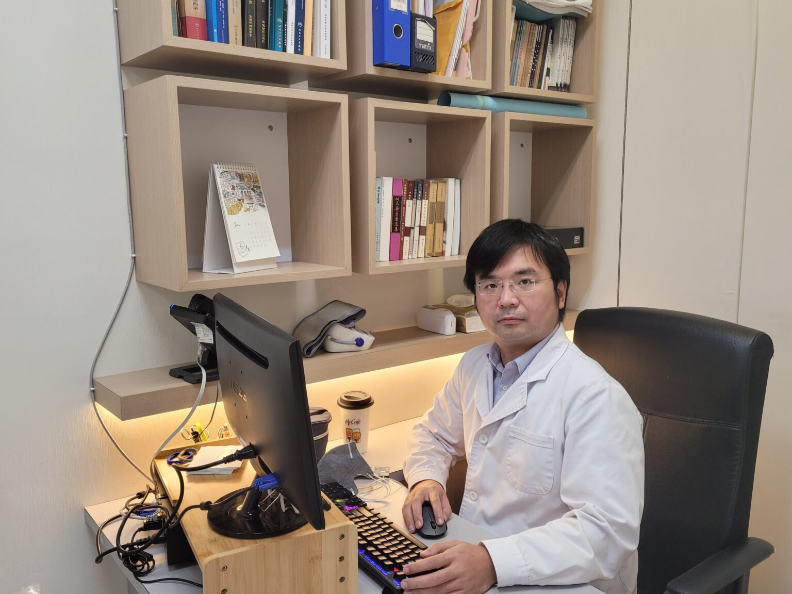
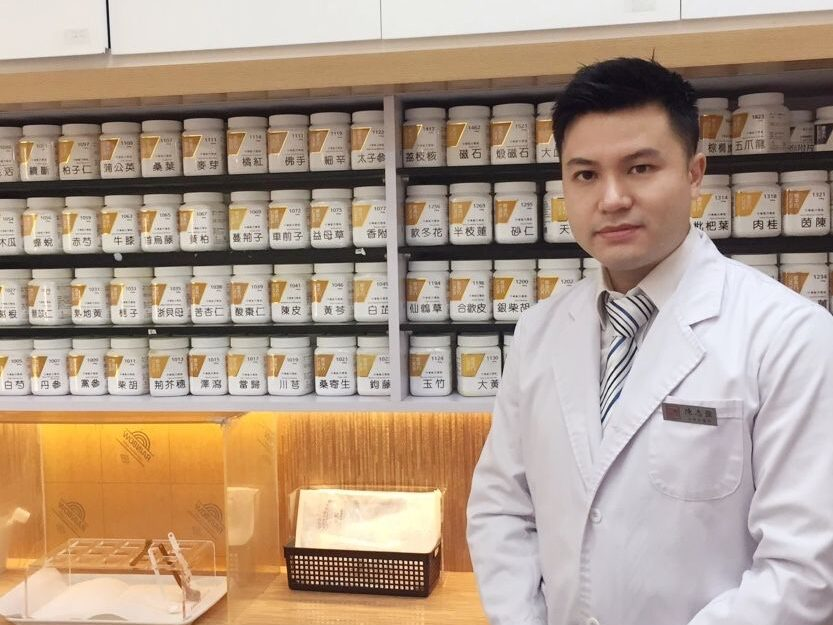
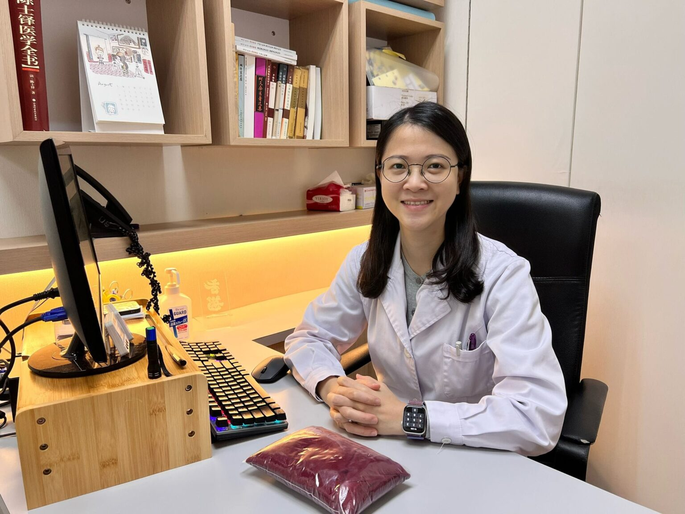
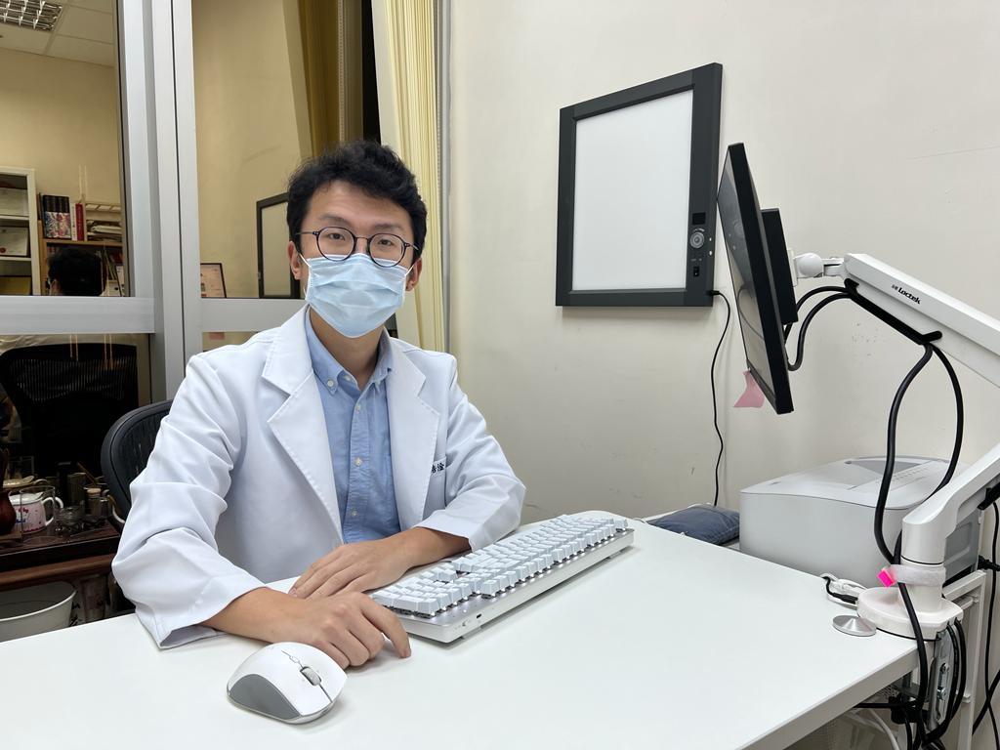
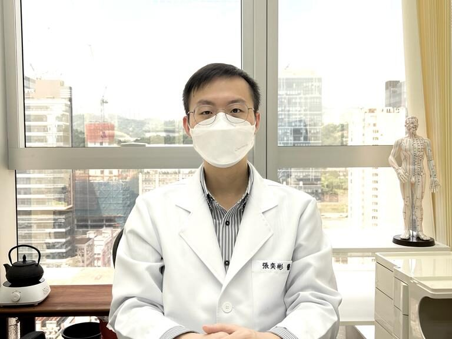

常駐中醫師簡介

蔡施敏中醫師
註冊編號：006450
- 香港中醫藥管理委員會註冊中醫師
- 香港浸會大學中醫學學士
- 香港浸會大學生物醫學理學士 (榮譽)
- 香港中文大學針灸學理學碩士
- 廣州中醫藥大學中醫博士(婦科)
- 中醫《基層醫療》證書課程 — 社區兒科學
- 中醫《基層醫療》證書課程 — 社區婦科醫學
- 中醫《基層醫療》證書課程 — 社區老年醫學
- 臨床皮膚醫學證書

郭君堯中醫師
註冊編號：006449
- 香港中醫藥管理委員會註冊中醫師
- 香港浸會大學生物醫學理學士 (榮譽)
- 香港浸會大學生物醫學理學士 (榮譽)
- 香港大學針灸學碩士
- 廣州中醫藥大學中醫博士(五官科)
- 香港醫院管理局初級獎學金 – 上海龍華醫院進修證書 (針灸科、骨傷科)
- 臨床皮膚醫學證書
梁軒偉中醫師
註冊編號：005786
- 香港中醫藥管理委員會註冊中醫師
- 香港浸會大學中醫學學士
- 香港浸會大學生物醫學理學士 (榮譽)
- 香港中文大學針灸學理學碩士

陳志強中醫師
註冊編號：006448
- 香港中醫藥管理委員會註冊中醫師
- 香港浸會大學中醫學學士
- 香港浸會大學生物醫學理學士 (榮譽)
- 香港浸會大學中醫學碩士 (中醫內科研究及應用專業)
陳鳳恩中醫師
註冊編號：005190
- 香港中醫藥管理委員會註冊中醫師
- 香港大學中醫學學士
- 香港浸會大學中醫學碩士

劉明佩中醫師
註冊編號：008722
- 香港中醫藥管理委員會註冊中醫師
- 香港護士管理局註冊護士
- 廣州中醫藥大學中醫學學士
- 香港大學護理學學士
- 香港理工大學護理學碩士
- 六經辨證臨床應用培訓課程證書
- 身心健康培訓課程證書
- 臨床皮膚醫學課程證書
- 中醫中風培訓課程證書
- 緊急醫學培訓課程證書
- 正修讀 中醫學深造文憑 (疼痛學)

梁晧淦中醫師
註冊編號：006782
- 香港中醫藥管理委員會註冊中醫師
- 香港浸會大學中醫學學士
- 香港浸會大學生物醫學理學士 (榮譽)
- 香港浸會大學中醫學針灸碩士
- 香港醫院管理局初級獎學金 – 上海龍華醫院進修證書 (針灸科、骨傷科、婦科)
- 廣州中醫藥大學針灸博士生

張奕彬中醫師
註冊編號：008112
- 香港中醫藥管理委員會註冊中醫師
- 香港浸會大學中醫學學士
- 香港浸會大學生物醫學理學士 (榮譽)
- 香港中文大學中醫學理學碩士（針灸）
- 香港大學-社區精神病學培訓課程證書
- 香港中文大學專業進修學會-中風培訓課程證書
- 香港老年學會-實用老年病學培訓課程證書
- 香港中西醫結合醫學會-中西醫應對皮膚反應與疾病培訓課程證書
- 香港大學專業進修學院-六經辨證臨床應用培訓證書
- 香港急症醫學會-緊急醫學培訓課程證書
- ERB 課程導師
施少輝中醫師
註冊編號：007325
- 香港中醫藥管理委員會註冊中醫師
- 中國執業醫師
- 香港浸會大學中醫內科碩士
- 北京中醫藥大學中醫學學士
- 香港大學 社區精神醫學證書
- 北京中醫藥大學 針灸推拿學 輔修專業證書